Introduction to biological psychology
Research at the interface of biology and psychology is amongst the most active in the whole of science. It seeks to answer some of the ‘big’ questions that have fascinated our species for thousands of years. What is the relationship between brain and mind? What does it mean to be conscious? Developments in our understanding of conditions such as depression or anxiety that can severely impact on our quality of life give hope for the development of more effective treatments.
One reason for rapid advances in biological psychology has been the technological progress that has provided tools to study brain processes in ways that were unimaginable just a few decades ago. It easy to forget that it was only 130 years ago, in the late nineteenth century, that Santiago Ramón y Cajal, Camillo Golgi and others were describing the detailed structures of nerve cells in the brain.
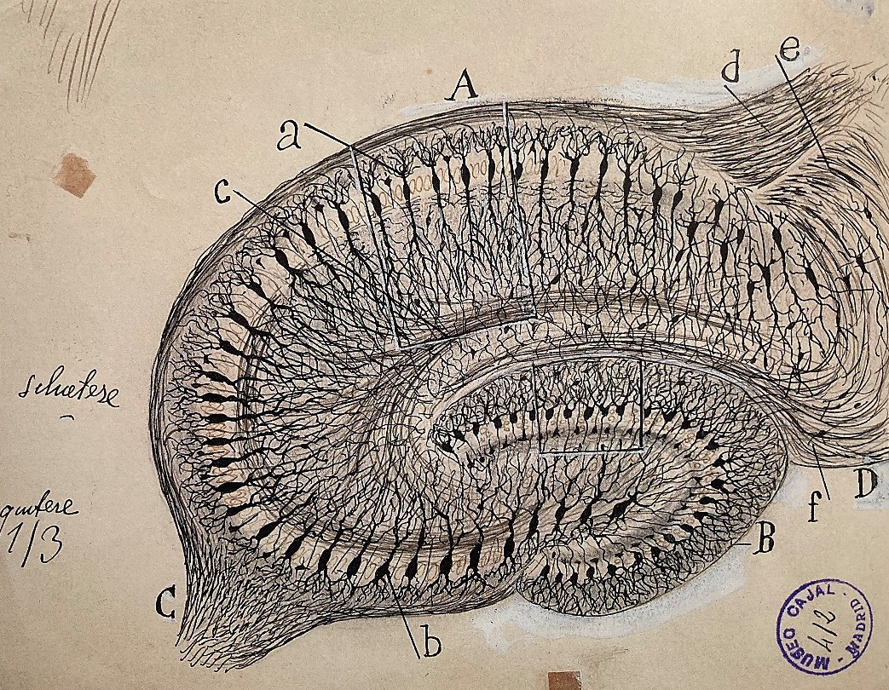
In addition to his skill in describing the detailed structure of the nervous system, Cajal made crucial theoretical advances and, for that reason, is often referred to as ‘the father of neuroscience’. He was the first to argue clearly that transmission of the nerve impulse is in one direction only and that individual neurons communicate at specialised structures called synapses. The detailed mechanisms that underlie communication – the nervous system, the action potential, and synaptic transmission – were not elucidated until the 1950s. At about the same time, records of the firing of single cells in the nervous system, especially within those parts of the brain that receive sensory stimuli, began to suggest the way in which information was coded and processed.
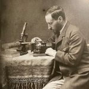
At that time the experimental methods for investigating the contribution of particular brain structures to aspects of behaviour were crude. They essentially involved permanently destroying (‘lesioning’) a few square millimetres of brain tissue containing several hundred thousand nerve cells, and then examining the effects on behaviour. Since then, there have been remarkable advances in our ability to study brain mechanisms and their relationship to behaviour. It is now possible to record the activity of many cells simultaneously. There are techniques that permit modulation of the activity of groups of nerve cells with identified functions for a short period of time before allowing them to return to normal functioning. As you will read in later chapters of this book, this has made possible a much greater understanding of the workings of the brain under normal circumstances, and the ways in which its functioning may be disturbed in different disease states.
As you read through this book it may seem as though the brain is a terribly ‘tidy’ organ. That, at least, is the impression that you might easily get as you look at the drawings and pictures that illustrate the text. But it is worth reflecting on how it feels to encounter a soft, jelly-like, living brain in practice. Here are a couple of sentences from the neurosurgeon Henry Marsh, describing the way in which he uses a small suction device to gradually approach, and then remove, a tumour located towards the centre of his patient’s brain. This particular tumour was located in the pineal gland, a structure with a long and fascinating history in neuroscience. He writes:
I look down my operating microscope, feeling my way downwards through the soft white substance of the brain, searching for the tumour. The idea that my sucker is moving through thought itself, through emotion and reason, that memories, dreams and reflections should consist of jelly, is simply too strange to understand. (Do No Harm: Stories of Life, Death and Brain Surgery. Weidenfeld & Nicolson, 2014).
Mind and brain: a historical context
Heart or brain as the basis for thought and emotion?
During much of recorded human history, there was uncertainty about whether the heart or the brain was responsible for organising our behaviour. The early debates on this topic are best recorded in the works of the Greek philosophers, because, to some extent at least, complete texts are available in a way that is not true for most other ancient human civilisations. In the 700 years from about the 5th century BCE to the 2nd century CE, the Greeks put forward two contrasting views.
One group of philosophers, of which Aristotle (~350 BCE) is the best known, held that it was the chest, most likely the heart, that was crucial in organising behaviour and thought.
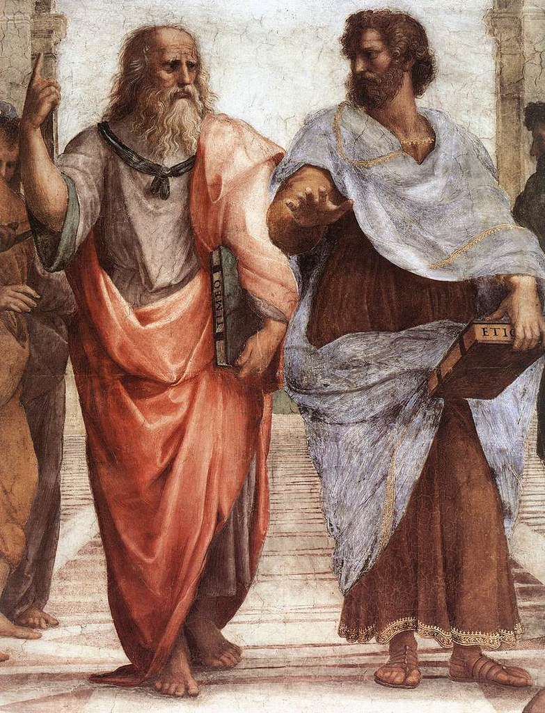
The heart was the seat of the mind, and the brain had no important role other than, perhaps, to cool the blood. In threatening or exciting situations it is changes in heart function that we become consciously aware of, while we have no conscious access to the changes in brain activation that are occurring at the same time. So it is hardly surprising that the heart was ascribed ‘emotional’ and ‘cognitive’ functions, and that it still features in our communication and language in a way that the brain does not. Apologies can be ‘heartfelt’; the universal emoji for affection and love is a heart; Shakespeare has Macbeth conclude that ‘False face must hide what the false heart doth know’ (Macbeth 1.7.82) as he resolves to murder King Duncan and take the Scottish throne for himself.
In fact, there was a grain of truth in these ideas. Experiments conducted by Sarah Garfinkel and others in the last few years have demonstrated that pressure receptors in the arteries that lead from the heart become active on each heart contraction and can influence the processing of threat-related stimuli (Garfinkel and Critchley, 2016). It isn’t just the heart that can affect the way in which emotionally salient stimuli are processed by humans – abnormal stomach rhythms enhance the avoidance of visual stimuli, such as faeces, rotting meat, or sour milk, that elicit disgust (Nord et al., 2021). It is interesting that William James, whose Principles of Psychology (1890) is regarded as one of the foundational texts of modern psychology, put forward a similar idea in a short paper published in the 1880s (James 1884).
Another group of early Greek writers gave the brain a much more important role, of which Hippocrates and Plato (4th century BCE) and Galen (2nd century BCE) are best known. They developed the idea that, since the brain was physically connected by nerves to the sense organs and muscles, it was also most likely the location of the physical connection with the mind. Galen was a physician whose training was in Alexandria. He moved to Rome and frequently treated the injuries of gladiators. He accepted Hippocrates’ argument about the importance of the brain in processing sensory information and generating behavioural responses. The immediate loss of consciousness that could be produced by a head injury confirmed his view. He also performed experiments that demonstrated the function of individual nerves; he showed that cutting the laryngeal nerve, which runs from the brain to the muscles of the larynx, would stop an animal from vocalising. He rejected another earlier belief that the lungs might be the seat of thought, suggesting that they simply acted as a bellows to drive air through the larynx and produce sounds.
In subsequent centuries Galen’s insights were forgotten in much of western Europe, but remained very influential in the Islamic world. Ibn Sina (still sometimes known as Avicenna, the Latinised version of his name) was born in 980 CE, and is generally acknowledged as the greatest of the physicians of the Persian Golden Age. He refined and corrected many of Galen’s ideas. He provided a detailed description of the effects of a stroke on behaviour, and correctly surmised that strokes might either result from blockages or bursts in the circulation of blood to the brain. He studied patients suffering from a disorder similar to severe depression that, at the time, was called the ‘love disorder’. When treating someone with this ‘disorder’ he used changes in the heart’s pulse rate as a way of identifying the names of individuals that were especially significant to them. He also, as might be expected of a physician, had a detailed knowledge of the effects of plant-derived drugs such as opium, the dried latex from poppy seed heads of which the active component is morphine (Heydari et al., 2013). He knew that it was especially valuable in treating pain, but had serious side effects including suppression of breathing and, with long term use, addiction (see Chapters 6 and 15).
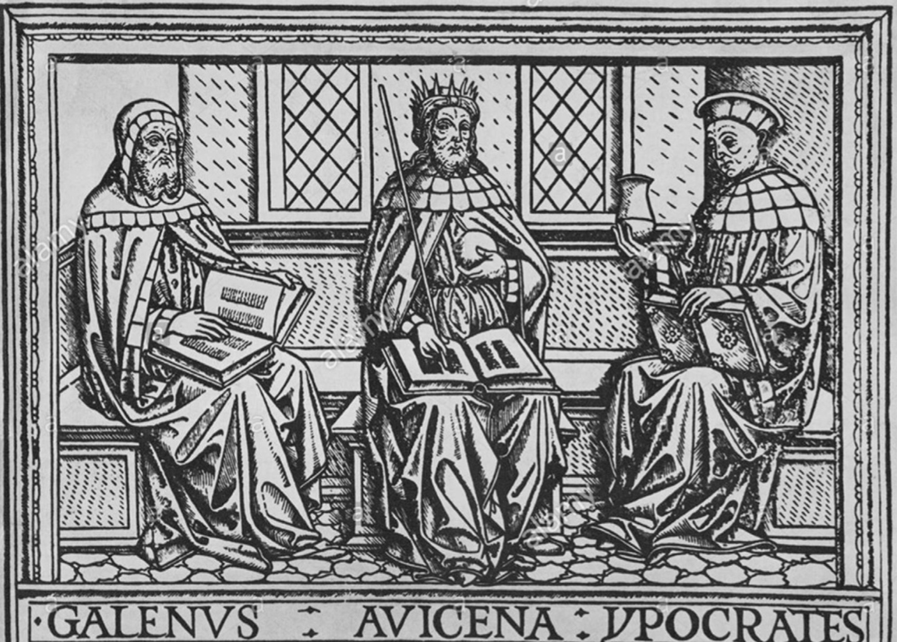
Mind and body
In the intellectual ferment of post-Reformation Europe, the relationship between the mind and body, especially in the context of what we can know with certainty to be true, became a subject of great controversy.
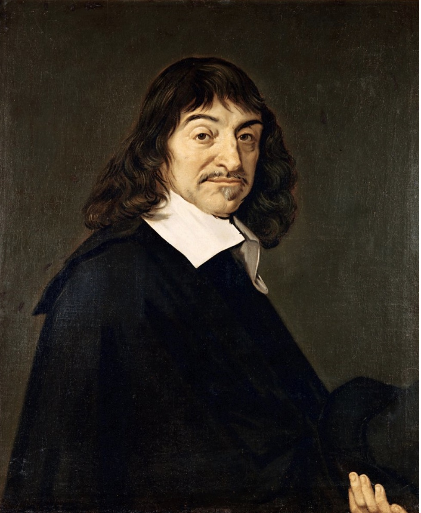
René Descartes was a French philosopher whose most influential work in this area, the Discourse on Method, was published in 1637. He reached the conclusion that we can never be certain that our reasoning about the external world is correct, nor can we be sure that most of our own experiences are not simply dreams. However, he argued, the one thing we can be certain of is that, to use Bryan Magee’s free translation, I am consciously aware, therefore I know that I must exist: ‘Si je pense, donc je suis’ in the original French, or famously ‘Cogito, ergo sum’ in the later Latin translation (Magee, 1987).
This became the basis for Descartes’ argument for dualism. However, he also recognised that mind and body had to interact in some way. In his book De homine [About humans] written in 1633 but not published until just after his death, he suggested that this might happen through the pineal gland, as the only non-paired structure within the brain. He also thought that muscle action might be produced through some kind of pneumatic mechanism involving the movement of ‘animal spirits’ from the fluid-filled ventricles within the brain to the muscles. In this scheme, the pineal gland acted as a kind of valve between the mind and the brain. We now know that the pineal gland is in fact an endocrine gland that is important in regulating sleep patterns.
Descartes also described simple reflexes, such as the withdrawal of limb from heat or fire, as occurring via the spinal cord, and not involving the pineal gland (Descartes [1662], 1998). Although many of Descartes’ ideas about the way in which the body functioned were incorrect, he was a materialist, in the sense that he viewed the body as a mechanism.
Descartes’ legend to this drawing (Figure 1.6) reads:
For example, if the fire A is close to the foot B, the small particles of fire, which as you know move very swiftly, are able to move as well the part of the skin which they touch on the foot. In this way, by pulling at the little thread cc, which you see attached there, they at the same instant open e, which is the entry for the pore d, which is where this small thread terminates; just as, by pulling one end of a cord, you ring a bell which hangs at the other end…. Now when the entry of the pore, or the little tube, de, has thus been opened, the animal spirits flow into it from the cavity F, and through it they are carried partly into the muscles which serve to pull the foot back from the fire, partly into those which serve to turn the eyes and the head to look at it, and partly into those which serve to move the hands forward and to turn the whole body for its defense. (de Homine, 1662)
The common feature of both the heart- and early brain-centred ideas about the relationship between the body and behaviour was of a fluid-based mechanism that translated intentions into behaviour. In the brain-centred view, the fluid in the ventricles (Descartes’ ‘animal spirits’) connected to the muscles by nerves had this function, whereas in the heart-centred account, that role was taken by the blood.

Electrical phenomena were documented as long ago as 2600 BCE in Egypt, but it was not until the eighteenth century that they became a subject of serious scientific enquiry. In 1733 Stephen Hales suggested that the mechanism envisaged by Descartes might be electrical, rather than fluid, in nature, although this idea remained very controversial.
By 1791 Luigi Galvani had confirmed electrical stimulation of a frog sciatic nerve could produce contractions in the muscles of a dissected frog leg to which it was connected. He announced that he had demonstrated ‘the electric nature of animal spirits’.
In the 1850s Hermann von Helmholtz used the same frog nerve/muscle preparation to estimate that the speed of conduction in the frog sciatic nerve was about 30 metres per second. This disproved earlier suggestions that the nerve impulse might have a velocity that was as fast as, or even faster, than the speed of light! During the course of the twentieth century, gradual progress was made in understanding exactly how information is transmitted both within and between individual nerve cells. You can read more about this in Chapters 4 and 5.
At about the same time that Galvani and Helmholtz were uncovering the mechanisms of electrical conduction in nerves, there was also great interest in the extent to which different cognitive functions might be localised within the brain. Franz Gall and Johann Spurzheim, working during the first half of the nineteenth century, suggested that small brain areas, mainly located in the cortex, were responsible for different cognitive functions. They also believed that the extent to which individuals excelled in particular areas could be discovered by carefully examining the shape of the skull. Spurzheim coined the term phrenology to describe this technique. The idea became very popular in the early 1800s, but subsequently fell out of favour.
Gall and Spurzheim disagreed spectacularly after they began to work and publish independently. After one book by Spurzheim appeared, Gall wrote: ‘Mr. Spurzheim’s work is 361 pages long, of which he has copied 246 pages from me. …. Others have already accused him of plagiarism; it is at the least very ingenious to have made a book by cutting with scissors’ (Whitaker & Jarema, 2017).
In the 1860s, studies by physicians such as Paul Broca, working in Paris, began to correlate the loss of particular functions, such as language, with damage to specific areas of the brain. They could only determine this by dissections performed after death, whereas today techniques such as computed tomography (CT) and magnetic resonance imaging (MRI) scans reveal structural changes in the living brain. Studies of this kind could indicate that a particular area was necessary for that ability but did not indicate that they were the only areas of importance. The activation of different brain areas while humans perform both simple and complex cognitive tasks including speech can be measured using functional magnetic resonance imaging (fMRI) while the participant lies in the brain scanner.
Broca also noted that loss of spoken language was almost always associated with a lesion in the left cortex and often associated with weakness in the right limbs – the first clear example of cerebral lateralisation. Although he is usually credited with that discovery, Marc Dax, another neurologist working in the 1830s, appears to have made the same observation as Broca, although his data were not published until after his death in 1865 – just a few months before Broca’s own more comprehensive publication. Although it was assumed until fairly recently that brain lateralisation was uniquely human and associated with language there is now convincing evidence that it is widespread amongst vertebrates and has an ancient evolutionary origin (Vallortigara & Rogers, 2020).
Broca, like so many of the physicians and scientists discussed earlier, was a man of very wide interests. He published comparative studies of brain structure in different vertebrates and used them to support Charles Darwin’s ideas on evolution. He has been criticised for potentially racist views (Gould, 2006). He believed that different human races might represent different species and that they could be distinguished through anatomical differences in brain size and the ratios of limb measurements. Modern genetic studies demonstrate that living humans are a single species, although there is also evidence that early in our evolutionary history our species interbred with other early, and now extinct, humans including Neanderthals and Denisovans (Bergström et al., 2020).
Positivism and the study of behaviour
In the latter part of the nineteenth century, psychologists often relied on introspection for their primary data. But the French philosopher Auguste Compte who led the positivist movement, argued that the social sciences should adopt the same approach as physical scientists and rely solely on empirical observation. In the study of behaviour this meant relying on recording behaviour either in the laboratory or field. North American psychologists studying conditioning and animal learning including John Watson (of ‘Little Albert’ fame – see below) and Burrhus Skinner took this approach. Nikolaas Tinbergen and Konradt Lorenz used a similar framework as they developed the discipline of ethology in Europe.
Behaviorism in North America
Watson, in an article published in Psychological Review in 1913, suggested that ‘Psychology, as the behaviorist views it, is a purely objective, experimental branch of natural science which needs introspection as little as do the sciences of chemistry and physics’ (Watson, 1913). Watson had a varied scientific career, starting with studies on the neural basis of learning. He was particularly interested in the idea that neurons had to be myelinated in order to support learning. He then spent a year carrying out field studies on sooty and noddy terns using an experimental approach to investigate nest site and egg recognition. This was followed by experimental studies on conditioning using rats, which emphasised the role of simple stimulus-response relationships in behaviour. He resisted any consideration of more complex cognitive processes because, to him, they risked returning to a dualist separation of mind and body.
Towards the end of his short scientific career, he performed the infamous ‘Little Albert’ experiment in which he conditioned a nine-month-old baby, Albert B., to fear a white rat (Watson & Rayner, 1920). Initially, the baby showed no fear of the rat, but the experimenters then made a loud and unexpected sound (a hammer hitting a steel bar) each time the baby reached out towards the rat. After several pairings, Albert would cry if the rat were presented, but continued to play with wooden blocks that he was provided with in the same context. He became upset when presented with a rabbit, though to a lesser extent than with the rat. This is an experiment that would almost certainly not be approved under the ethical codes used in psychology today (see ‘Ethical Issues in Biological Psychology’ later in this chapter).

This type of procedure is now often referred to as Pavlovian conditioning, named after the Nobel prize-winning Russian physiologist Ivan Pavlov. His experiments used dogs and measured salivation in response to the presentation of raw meat. The dogs were conditioned by pairing the sound of a a ticking metronome (not, as often stated, a bell) with the availability of the meat. Subsequently the sound of the metronome alone was enough to elicit salivation. Although Pavlov’s name is the one associated with the phenomenon, it was already well known by his time. The French physiologist Magendie described a similar observation in humans as early as 1836.

Skinner set out an even more radical approach in his book The Behaviour of Organisms (1938), arguing that cognitive or physiological levels of explanation are unnecessary to understand behaviour. In the Preface added to the 1966 edition, he wrote the following:
The simplest contingencies involve at least three terms – stimulus, response, and reinforcer – and at least one other variable (the deprivation associated with the reinforcer) is implied. This is very much more than input and output, and when all relevant variables are thus taken into account, there is no need to appeal to an inner apparatus, whether mental, physiological, or conceptual. The contingencies are quite enough to account for attending, remembering, learning, forgetting, generalizing, abstracting, and many other so-called cognitive processes.
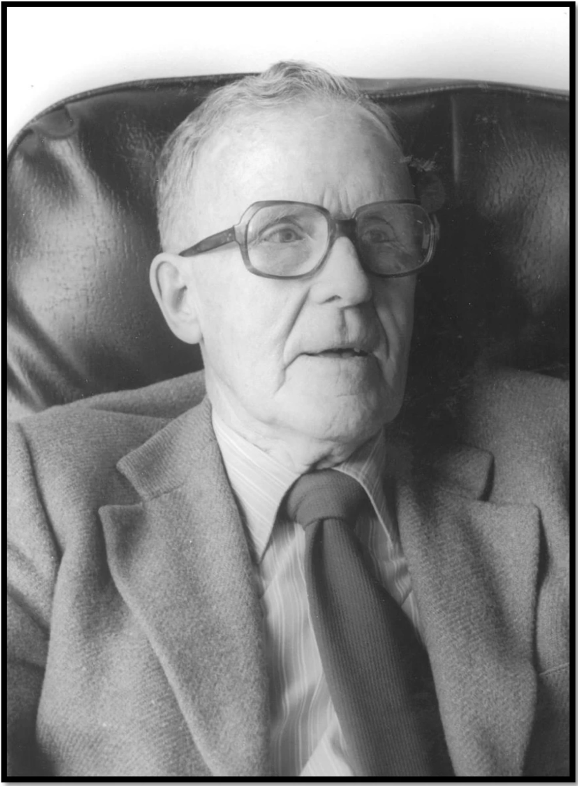
Yet this approach had already been criticised. Donald Hebb, in The Organisation of Behavior, published in 1949, argued for a close relationship between the study of psychology and physiology. In the opening paragraphs of his book he contrasted his own approach with that of Skinner, saying:
A vigorous movement has appeared both in psychology and psychiatry to be rid of ‘physiologising’ that is, to stop using physiological hypotheses. This point of view has been clearly and effectively put by Skinner (1938), …… The present book is written in profound disagreement with such a program for psychology. (Hebb, 1949, page xiv of the Introduction).
Today Hebb is best remembered for the suggestion that learning involves information about two separate events, converging on a single nerve cell, and the connections being strengthened in such a way as to support either Pavlovian or operant conditioning. His hypothesis, which he acknowledged as having its origin in the writings of Tanzi and others some fifty years before, is often remembered by Carla Schatz’ mnemonic ‘Cells that fire together, wire together’. Today, that phrase is most often associated with the phenomenon of long term potentiation (LTP) which acts as an important model for the neural mechanisms involved in learning and memory.
There were other areas of psychology, especially the study of sensation and perception, where the radical approach of the behaviourists never took a full hold. Helmholtz, whose early work on neural conduction was so important, also made ground breaking contributions to the study of auditory and especially visual perception. He emphasised the importance of unconscious inferences in the way in which visual information is interpreted. All perceptual processing involves a mix of ‘bottom-up’ factors that derive from the sensory input and ‘top-down’ factors which involve our memories and experience of similar sensory input in the past. Alternative, more descriptive, terms for ‘bottom-up’ and ‘top-down’ are data driven and concept driven. You will learn much more about these processes in modules that explore cognitive psychology.
The development of ethology in Europe
Although the study of animal learning during the mid twentieth century was a dominant paradigm in biological psychology in North America, this was much less true in Europe. Here, an alternative approach evolved.
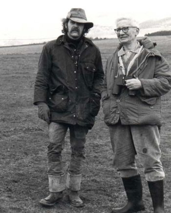
Konrad Lorenz and Nikolaas Tinbergen emphasised the detailed study of animal behaviour, often in a field rather than a laboratory setting. Both were fascinated by natural history when young. Lorenz was especially taken by the phenomenon of imprinting. It was first described in birds, such as chickens and geese, that leave the nest shortly after hatching and follow their parents. In a classic experiment he divided a clutch of newly-hatched greylag geese into two. One group was exposed to their mother, the other to him. After several days the young goslings were mixed together. When he and the mother goose walked in different directions the group of youngsters divided into two, depending on whom they were originally imprinted. The term imprinting is now often used much more generally for learning that occurs early in life but continues to influence behaviour into adulthood. Lorenz remains a controversial figure because of his association with Nazism during World War II.
Tinbergen began his scientific career in Holland, performing experiments that revealed how insects use landmarks to locate a burrow. They were reminiscent of Watson’s earlier studies with terns, though much better designed. During World War II he was held as hostage but survived and subsequently moved to Oxford University in the late 1940s. He is best remembered for an article written in 1963 on the aims of ethology, which will be the basis of the next section of this chapter.
Lorenz and Tinbergen, like Watson and Skinner, were interested in explaining behaviour in its own terms rather than exploring underlying brain or physiological mechanisms, and in this sense they were both adherents of the positivist approach championed by Auguste Compte for all of the social sciences. Tinbergen made this point very clearly in his book The Study of Instinct (1951). He acknowledges that the behaviour of many other animals can resemble that of a human experiencing an intense emotion (as Darwin had pointed out in The Expression of Emotions in Man and Animals in 1872) but went on to say that ‘because subjective phenomena cannot be observed objectively in animals, it is idle to claim or deny their existence’ (Tinbergen, 1951, p.4).
A cognitive perspective in animal learning and ethology
By the second half of the twentieth century, psychologists interested in human behaviour were becoming increasingly dissatisfied with the limitations of the behaviorist approach. Psychologists working on animal learning also realised that some of the phenomena that could be observed in their experiments could only be explained by postulating intervening cognitive mechanisms. Tony Dickinson, in his short text Contemporary Animal Learning Theory, published in 1980, used the example of sensory preconditioning. Dickinson was one of the initiators of the so-called ‘cognitive revolution’ in animal learning.
In a standard Pavlovian procedure, rats are initially trained to press a bar for small pellets of sweetened food. Then they are exposed to an initially neutral stimulus – a light in the wall of their cage – immediately prior to receiving a mild foot shock. After several such pairings the rats are exposed to the light alone – there is no shock. Nevertheless, the rats ‘freeze’ (remain immobile) and pause bar-pressing for the food reward for a few seconds before returning to their normal behaviour.
The critical modification in sensory preconditioning is to expose the rats to pairings of a light with a second neutral stimulus, in this case a sound, prior to the main conditioning task. Since nothing happened after these initial pairings the rats rapidly come to ignore them. Their ongoing behaviour, in this case bar-pressing for the food pellets, was not changed. Now the rats were conditioned to associate the light and shock in the standard way. Following conditioning they were exposed either to the light, or to the tone. Rats exposed to the tone paused in a similar way to rats that were exposed to the light despite never having experienced that sound preceding a shock. So, despite little or no change in their behaviour during those initial light-tone pairings, they clearly had learned something. Learning does not have to involve any overt behavioural change.

Dickinson set out the implications in the following way:
As we shall see, sensory preconditioning is but one of many examples of behaviourally silent learning, all of which provide difficulties for any view that equates learning with a change in behaviour. Something must change during learning and I shall argue that this change is best characterised as a modification of some internal structure. Whether or not we shall be able at some time to identify the neurophysiological substrate of these cognitive structures is an open question. It is clear, however, that we cannot do so at present. (Dickinson, 1980, p.5)
That was 1980!
As I write this, in the 2020s, it is possible to give an optimistic answer to Dickinson’s final query. Modern techniques from neuroscience can identify the brain structures and changes in small groups of neurons that support learning and memory. In one recent example, Eisuke Koya and his colleagues, who work in the School of Psychology at the University of Sussex, describe a simple learning task in which mice are exposed to a short series of clicks (the ‘to-be-conditioned’ stimulus) followed by an opportunity to drink a small quantity of a sucrose solution. After being exposed to such pairings over a period of a few days, they learn to approach the sucrose delivery port as soon as the clicks begin. The mice used in these experiments were genetically modified in such a way that nerve cells in the frontal cortex that were activated during the conditioning trials could be made to glow with a green fluorescence. The research established that small, stable groups of nerve cells (‘neuronal ensembles’) were activated from one day to the next. The researchers were also able to manipulate these cells in such as way as to produce an abnormal change in their activity during subsequent tests in which the animals were exposed to the conditioned stimulus. Approach to the sucrose delivery port was disrupted when this was done, suggesting that the activation of these cells contributed in an important way to the learnt behaviour of the mouse (Brebner et al., 2020). Experiments of this kind are approaching the goal of identifying the neural structures and mechanisms that support learning and memory, and demonstrate how psychologists and neuroscientists can collaborate to tackle the fundamental problems of biological psychology.
Field studies of non-human primates
Researchers in the field of animal learning were not the only ones who found it difficult to explain their experimental results without invoking cognitive processes that could not be directly observed. Ethologists faced a similar challenge.
Jane Goodall began her fieldwork on chimpanzees in the early 1960s and, as she got to know and was accepted by the troop that she was studying at Gombe Stream in Tanzania, gathered evidence about their rich social and emotional lives and the use of tools that revolutionised studies of primate behaviour. To the consternation of her colleagues at Cambridge, she also gave names to the chimpanzees rather than the numbers which would supposedly lead to more objective study.
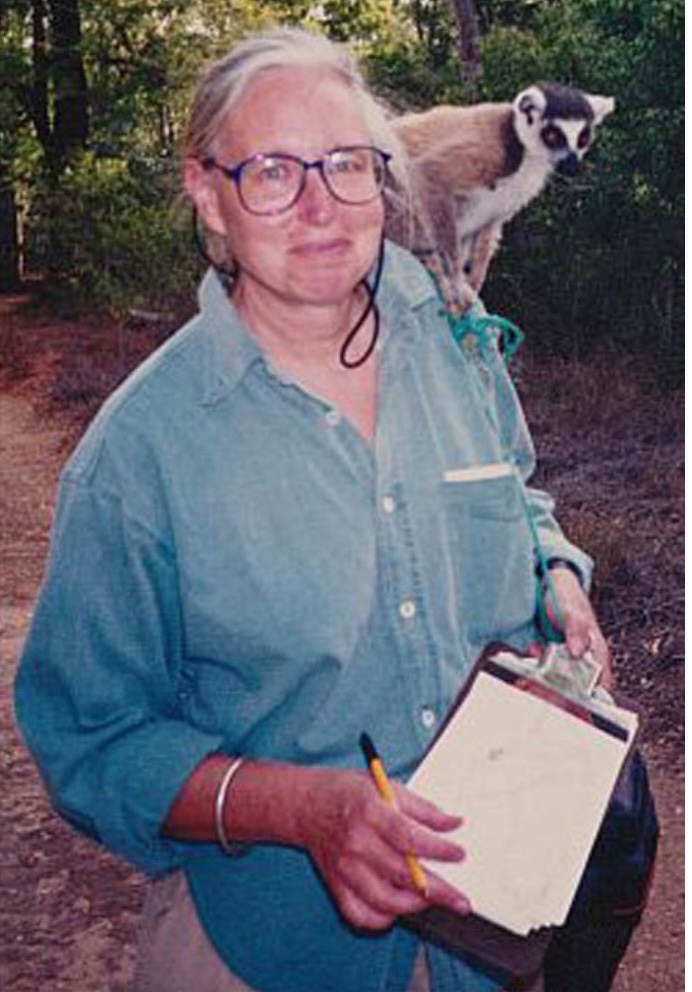
At about the same time, Alison Jolly was beginning her studies of lemur behaviour in Madagascar. She argued that the major driving force in evolution of primate cognition came from the complex demands that come from living in complex and long lasting social groups (Jolly, 1966).
Field studies carried out since then have demonstrated long-lasting social relationships in primate species such as baboons and vervet monkeys. Calls that the animals make in the context of aggressive encounters are interpreted in terms of an animal’s prior knowledge of social hierarchies within their group and their prior behaviour. For example, female chacma baboons, studied by Dorothy Cheney and Robert Seyfarth, have a call, the ‘reconciliatory grunt’, that is given just after an aggressive encounter to indicate a peaceful conclusion between the two individuals. When the call was played to a female who had just been involved in a mutual grooming session with another female, she behaved in a way that implied that the call must be directed at someone else and not her. However, if she had been involved in an aggressive encounter with that same female a little earlier, she behaved in a way that implied that the grunt had been directed at her (Engh et al., 2006).
Field studies of other long lived mammals, including elephants and dolphins, suggest that they also have complex social networks and sophisticated cognitive abilities.
Two features stand out at the end of this very short historical survey of ideas about the relationship between the brain and behaviour. The first is that, among contemporary psychologists and neuroscientists, there is an almost universal acceptance of some form of materialism. In other words all of the complexity in our behaviour, including such relatively less well understood areas such as consciousness, are a consequence of physical mechanisms operating in our bodies, and primarily in the nervous system. The second is that, despite a hiatus that lasted for at least the first half of the twentieth century, the study of phenomena such as emotion and consciousness are no longer seen as ‘off limits’ for scientific study. One challenge for modern neuroscience is to understand how the nervous system builds, uses and attaches emotional weight to internal representations of aspects of the external world.
What kinds of questions does Biological Psychology ask?
Since biological psychology is concerned with both behaviour and relevant physiological and brain mechanisms, it will often start with some interesting behavioural observations or experimental data. Once the behaviour of interest has been adequately documented, it is time to ask some questions. The ethologist Niko Tinbergen suggested that were four broad kinds of questions that might be of interest (Tinbergen 1963). The first two have a timescale within the life cycle of an individual animal and are concerned with:
(i) the underlying causes of changes in behaviour, such as brain mechanisms or hormonal changes, and
(ii) the development of behaviour, for example as an individual matures to adulthood.
These are sometimes referred to as the proximate causes of the behaviour. The remaining two questions are set in a much broader time frame and can be thought of as the ultimate causes (Bateson & Laland, 2013). They are concerned with:
(iii) the evolutionary relationships between patterns of behaviour in different species, and
(iv) the advantages of particular patterns of behaviour in the context of natural selection.
A couple of examples should illustrate how these questions differ from one another and yet still address the question of why a particular behaviour occurs in the form that it does.
Example 1: Bird song
The chaffinch (Fringilla coelebs) is a common European songbird. In the early Spring, adult males have a striking breeding plumage and their bills darken. At the same time the birds begin to perch in conspicuous places within a small territory that they defend from other males and sing. The females do not sing, although they use a variety of other calls. So, why do male chaffinches sing?
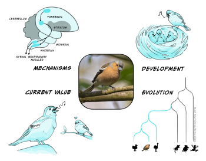
Causes and mechanisms. The changes in bill colour and onset of singing are associated with the increase in day length in the Spring. Experimental studies in other songbird species, such as those by Fenando Nottebohm in canaries, have shown that there is an increase in the secretion of testosterone at this time, and that experimental administration of this steroid hormone produces the same changes in appearance and behaviour (Nottebohm, 2002). Further studies have demonstrated that there are changes in the bird’s brain at this time.
The most surprising result was a clear demonstration that new neurons are formed through cell division in the areas of the brain involved in song. In the mid 1980s, when these studies were performed, the consensus was that neurons were never added to a mature vertebrate brain. Nottebohm’s work forced a re-examination of this idea. The methods that his lab used were repeated in other species, and demonstrated that the same thing could also happen in mammals, including humans. In the years since these ground-breaking studies, a good deal more has been learned about circuits within the songbird brain that support song production.
Development. You do not need to be an experienced birdwatcher to recognise the song of a chaffinch. It consists of several short trills followed a characteristic terminal flourish. This chaffinch sonagram shows the loudness (upper panel) and frequency changes in the song of a chaffinch. Alternatively, play the song as a short video.
However, although it is difficult to mistake the song of a chaffinch for that of a different species, the song has unexpected complexity. An individual may sing several subtly different song types and there are also clear differences in the song over the different parts of their widespread distribution through Europe. This raises several questions about the way in which a young chaffinch develops its song repertoire. If a nestling is reared in an acoustically isolated environment, it develops a highly abnormal song lacking the detailed structure typical of a chaffinch. However, if a bird reared in the same way is exposed to tape-recorded song, then it accurately copies the song types and incorporates them into its repertoire. Of course there will be be a considerable gap between hearing the song as a summer fledgling, and then singing the song in the following spring, so this is another example of behaviourally silent learning. In the wild, things turn out to be be much more complex. A chaffinch may acquire some song types in the first summer, but additional ones may also be learnt from neighbours in the following spring as they set up territories. It is clear that one early, popular idea about the development of song types is incorrect: they are not exclusively learnt from a bird’s father (Riebel et al., 2015).
Evolutionary relationships. Birds, like mammals, reptiles and amphibians, are vertebrates. Although there is tremendous variety in their appearance and behaviour, there are common features, such as the presence of a backbone. There are also strong similarities in broad aspects of brain structure and functioning. Songbirds are one of several groups of living birds and there are some 5000 different species. They all have a well-developed syrinx (the rough equivalent of the human larynx) which has a complex musculature that allows the bird to sing. There is tremendous variation from one species to another, from the complex, extended song of thrushes such as the blackbird and nightingale, to the much simpler song of the chaffinch. Songbirds evolved about 45 million years ago, and birds diverged from the vertebrate line that also gave rise to mammals some 320 million years ago. Our common ancestor probably resembled a small lizard. Present day lizards can show some degree of behavioural flexibility and social learning, so there are interesting questions about the extent to which some of the more advanced cognitive abilities of birds and mammals evolved independently or build on components already present in that common ancestor.
Function or current utility. Song is energetically expensive at a time of the year when food is not at its most abundant. It can also be dangerous. There is a risk that a sparrowhawk will appear over the top of the hedge on which the chaffinch is singing and provide the hawk with its next meal! It follows that song must also potentially enhance the biological fitness of the bird in some way. There are at least two factors at play here. A male has to attract a female to nest in his territory and mate with her. His song also advertises to other males that he holds, or is attempting to hold, that space, and may be a prelude for fighting over ownership of the best areas. There is also experimental evidence that characteristics of the song, particularly the complexity of the final trill, may be attractive to females and lead them to prefer one male over another. Although the evidence is not completely convincing for chaffinches, this idea would fit in with findings from a variety of other species. The croak of a frog, the roar of a red deer stag or the colours of a peacock’s tail may act as signals about the quality of the individual making the call, and may have the advantage of being hard to falsify – so called ‘honest signals’. However the precise way in which such signals evolve remains unclear (Penn & Számadó, 2020; Smith, 1991).
Example 2: Anxiety and fear
Tinbergen’s general approach can be productive in thinking about any aspect of behaviour. In humans anxiety or fear is an unpleasant emotional experience that may come in many forms including panic and phobias of various kinds. The emotion of fear is often evoked by quite specific threat-related stimuli – perhaps a snake (snake phobia) or wide open spaces (agoraphobia). In the same way as for bird song, we can ask the question ‘why?’ and break it down into queries about either proximate or ultimate causes.
Causes and mechanisms. The underlying physiological and brain mechanisms are well studied. They include increases in heart rate, release of hormones such as adrenalin, and activation of a specific brain network that includes the amygdala. One part of the amygdala, the central nucleus, is responsible for activating these different physiological changes in a coordinated manner (LeDoux, 2012). An understanding of these types of mechanisms has clinical relevance. Drugs that act selectively on these threat-processing circuits may have value as treatments for anxiety. Indeed benzodiazepines such as valium are still widely used in this way and are known to have especially potent effects in the amygdala. An important, but still unanswered, question is how these physiological responses relate to the conscious feeling of fear.
Development. We also know a good deal about the way in which fear may develop during an individual’s lifespan. Simple conditioning may often play a role and there is also good evidence that species as varied as rodents and primates are more likely to become fearful and avoid some types of object rather than others. In social species observational learning may also be important. Studies of young rhesus monkeys illustrate these points. A rhesus infant will initially show little avoidance or fear of model snakes or flowers. However if they are allowed to watch an edited video in which an adult rhesus appears to respond fearfully to either the flowers or a snake, they themselves develop fear responses to the snake but not to the flower (Cook & Mineka, 1990). This suggests an innate tendency to become fearful of some kinds of object, such as a snake, that can potentiate the effects of observational learning. In a similar way many rodent species will avoid odours associated with potential predators such as a fox or cat without having any previous experience of those animals. However, especially when young, those responses may be amplified if they observe an adult responding strongly to the same stimulus.
Evolutionary relationships. Comparative studies of the specific behaviour patterns associated with fear and the underlying physiological and brain mechanisms suggest that they have been conserved through vertebrate evolution. Charles Darwin, in the Expression of the Emotions in Man and Animals, provided some of the first really detailed behavioural descriptions of facial expressions associated with fear and especially emphasised their role in communication. Detailed comparisons of the neural circuitry in mammals, birds, amphibians and reptiles suggest that the amygdala, and especially its connections to the autonomic nervous system which activate the hormonal and other physiological responses to fear-evoking stimuli, are conserved through the entire vertebrate evolutionary line and must therefore have originated at least 400 million years ago. So it is not surprising that one of the responses of a Fijian ground frog to the presence of a potential predator (a cane toad) is an increase in the stress hormone corticosterone as well as a behavioural response, in this case immobility, that reduces the likelihood of being eaten (Narayan et al, 2013). Exposure to a stressful situation in humans produces the same hormonal response, although it is cortisol, which is almost structurally identical to corticosterone, that is released.
Function or current utility. Questions of function, or current utility, can be thought about at multiple levels. It is clear that fear, or the perception of threat-related stimuli can be a powerful driver of learning. As we saw earlier in this chapter, previously neutral stimuli that predict threat or danger come to evoke the same responses as the threat itself (Pavlovian conditioning). In the natural environment such responses are likely to enhance biological fitness. However in addition to thinking about the likely function of fear systems in a rather global manner, it is also possible to analyse the individual behavioural elements that make up a a fear response. One such element, described by Darwin (Darwin, Charles, 1872) and also recognised in the later studies of Paul Ekman, is that the eyebrows are raised which results in the sclera (white) of the eye becoming much more obvious (Jack et al., 2014 includes a video example). The original function of this response may simply have been to widen the field of view but, especially in primates, it can now also serve as a way of communicating fear within a social group. It is likely that behavioural responses frequently gain additional functions during evolution, perhaps even making the original function irrelevant. This is the reason that the term ‘current utility’ is often preferred to function (Bateson & Laland, 2013). If a functional hypothesis is be tested experimentally it will always be current utility that will be assessed. When a particular characteristic or feature acquires additional functions in this way they are sometimes described as exaptations rather than adaptations.
Scientific strategies in Biological Psychology
The first phase of any scientific investigation is likely to be descriptive. In biological psychology, this is a point at which the influence of an ethological approach is most obvious. It is easiest to describe how this phase proceeds by using some specific examples. Once the behaviour of interest has been clearly characterised it is often time to collect some empirical data. This will often involve either collecting behavioural and physiological data and correlating them, or taking a more experimental approach in which environmental or physiological factors are deliberately manipulated. A combination of these approaches will begin to elucidate the way in which neural processes influence behaviour and, in turn, are influenced by the consequences of that behaviour.
Describing behaviour: facial expressions and individual variation during conditioning
Many mammals, including rodents and primates, (including humans in the latter category), make distinctive facial expressions as they try out potential food sources. Humans will lick their lips as they eat something sweet and gooey. A food or drink that is unexpectedly sour (like pure lemon juice) or bitter (perhaps mature leaves of kale or some other member of the cabbage family) might elicit a gaping response in which the mouth opens wide and, in more extreme cases, saliva may drip out of the mouth.
These kinds of response can be observed in quite young babies. Indeed, as any parent is likely to know, they are very common as an infant transitions from breast feeding to solid foods. It may seem surprising but very similar responses can be observed in rats or mice as they drink sweet, sour or bitter solutions. It demonstrates that these are responses that are likely to have been conserved over relatively long periods of evolutionary time. They may serve a dual function. A response like gaping will help to remove something that may be toxic from the mouth – bitterness is often a signal that a plant contains harmful toxins. However it is also likely that, at least in some species, the ‘current utility’ of these expressions also includes a communicative function in species that feed in social groups. This would be another example of an exaptation (i.e. an additional function that becomes adaptive later).
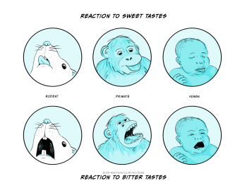
Detailed measurement of these facial responses forms the basis of the so-called ‘taste reactivity task’ in which controlled amounts of solutions with different taste properties are infused into the mouth of a rat or mouse and the facial expressions quantified (Berridge, 2019). The task was initially devised to investigate the role of different brain structures in taste processing. A little later some detailed studies with a variety of different solutions revealed that the extent to which they evoked ingestive (‘nice’) and aversive (‘nasty’) responses could, at least to some extent, vary independently. It then became clear that there were drug and brain manipulations that had no effect on the facial expressions evoked by a liked, or rewarding, sweet solution. However those same manipulations did reduce the extent to which an animal would be prepared to work (e.g. press a lever, perhaps several times) in order to gain access to that solution. The important implication was that the extent to which something is ‘liked’, measured by facial expressions, may depend on different factors to those that affect whether it is ‘wanted’, measured by effort to obtain that reward. Although this distinction first arose in the investigation of what might seem an obscure corner of biological psychology, it has, as you will read in Chapter 15, Addiction, become an important theoretical idea that helps explain some otherwise puzzling features of addiction to drugs, food and other rewarding stimuli.
One feature of animal behaviour, humans included, that seem irritating at first is that there is often substantial variation between individuals exposed to the same experimental manipulation. It can be tempting to ignore it, or to choose measures that at least minimise it. But this can be a mistake, as this example from Pavlovian conditioning demonstrates.
As a group of rats learns the association between the illumination of light and the delivery of a food pellet they retrieve the pellet more rapidly and the averaged behaviour of the group generates a smooth ‘learning’ curve. However, careful observation of individuals reveals several things. First, the changes in individual animals are much more discontinuous – almost as though at some point, individual rats ‘get’ the task, but at different times during the training process! The behaviour of individuals also varies in other, potentially interesting, ways. Some rats approach the light when it illuminates, rearing up to investigate it, and continue to do so even when they subsequently approach the place where the pellet is delivered. Other rats move immediately to the location where the food pellet will be delivered, apparently taking no further interest in the light. The behaviour of the former group is referred to as ‘sign tracking’ and the latter as ‘goal tracking’. It turns out that sign trackers and goal trackers differ in other interesting ways. For example, sign-tracking rats show greater impulsivity in other tasks and acquire alcohol self administration more readily. The same kinds of distinction may also show up in human behaviour and predict vulnerability to drug addiction and relapse.
Although the descriptive phase is likely to begin any serious scientific investigation, once interesting observations have been made they are likely to raise the kinds of questions that were discussed in the last section. What are the brain and physiological mechanisms that underlie the behaviour? How do the behaviour patterns develop through lifespan? and so forth. In working out how to tackle such questions there are a number of potential ways forward. They typically use a combination of two general strategies.
Investigational strategies: correlational approaches, and experimental manipulations
One strategy is to observe changes in behaviour, typically in a carefully controlled test situation or using a clearly defined set of behaviour patterns when doing fieldwork, while measuring changes in physiological and brain function that are likely to be relevant. Then, using appropriate statistical techniques, the changes in behaviour and physiology can be correlated together. The second strategy is to deliberately manipulate a test situation in order to determine the extent to which an imposed change in in physiology or brain function leads to a change in behaviour, or a change in behaviours leads to a physiological change.
The issue with the first correlational strategy is that, although the results may suggest that there is some type of causal relationship between behaviour and physiology, they don’t clarify the nature of the relationship. Behaviour A may cause changes in physiological or brain variable B. But equally, the physiology may influence the behaviour. Finally, it may be that there is no direct mechanistic linkage between behaviour and physiology. Instead, some third variable is independently affecting both. A further complication is that there may be important feedback loops that influence the outcome. So, although correlational studies can be very useful, they do have limitations when it comes to their interpretation. The second strategy, involving deliberate experimental manipulation, has a better chance of determining the direction of causation. But it may raise other problems. Deliberately interfering with the functioning of a complex biological system may lead it to respond in unpredictable ways and may also be ethically problematic.
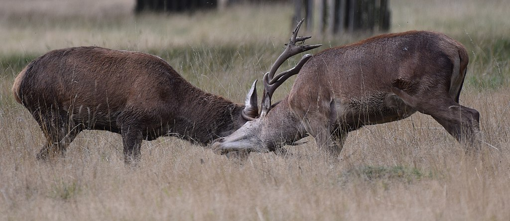
Let’s see how this works in practice by considering the behaviour of red deer during the autumn rutting season. At this time, a successful male deer may establish a ‘harem’ of female deer and defend them against other males. His behaviour makes it more likely that only he will have the opportunity to mate with them, and hence that the resulting offspring would enhance the representation of his genes in the next generation. Females also gain from being in the harem by gaining some protection from harassment by other males, which provides the opportunity to feed in a more uninterrupted way. They may choose the harem of a particular male on the basis of his perceived fitness.
It would first be possible to correlate the gradual increase in aggressive behaviour during the red deer rut with the increasing blood testosterone that occurs during the autumn. It might be tempting to conclude that the increased testosterone level causes the increased level of aggressive behaviour directed at other males. However there are at least two, and perhaps more, possibilities that would need to be excluded first.
First, it is possible that the changes in behaviour and increased testosterone level are triggered independently by some third factor. One alternative would be that decreasing day length acts as that trigger. The day length signal might be detected within the pineal gland (Descartes’ supposed valve from the soul to the body!) and independently trigger both the hormonal and behavioural changes.
A second possibility is that the behavioural changes actually trigger the hormonal change. This isn’t a completely implausible suggestion. Such effects have been documented in a number of mammals, including human (male) tennis players, where testosterone levels increase after a match that they have just won. In the same way, testosterone secretion might be sensitive to whether aggressive encounters between the male deer are won or lost.
An experimental approach can be used to overcome the difficulty in deciding what causes what. In the case of the role of testosterone in aggression, one possible strategy is to remove the source of testosterone and determine whether aggressive behaviour continues. In fact this has been common practice for millennia in managing farmed animals. An intact bull may be very aggressive but castrated male cattle (bullocks) are typically much less so. In experimental animals the specific role of testosterone could be demonstrated by administering the hormone to a castrated animal and showing that aggressive behaviour returns to the expected level. Experiments of exactly this kind have been performed on red deer, and indicate that testosterone does indeed restore rutting behaviour when administered to a castrated male in the autumn. However the effect of the hormone on rutting behaviour is absent when the same treatment is given in the spring, although there is some increase in aggressive behaviour (Lincoln et al., 1972). So, factors like day length and hormone level interact in a more complex way than might be expected.
A similar experimental approach can be taken in relation to the contribution that particular brain structures or identified groups of neurons may make to a specific behaviour pattern. Suppose that we have already discovered, perhaps by making recordings of neural activity, that neurons in a particular structure (let’s call it area ‘X’) become more active while an animal is feeding. How can we demonstrate that those neurons are important in actually generating the behaviour rather than, for example, just responding to consequences of eating food? In other words, how can we determine that activation of area X causes feeding as opposed to feeding causing activation of area X? If stimulation of the nerve cells within area X leads to the animal, when not hungry, beginning to feed on a highly palatable food, then you might assume that demonstrates their critical role – authors reporting such an experiment will often state that the cells in this area are ‘sufficient’ to generate feeding. However this doesn’t show that those same cells are always active in the many other experimental situations in which that animal might begin to feed. In the same way, suppose an animal fails to eat when the cells in that same area X are inactivated. That finding doesn’t demonstrate that these cells are always ‘necessary’ for feeding to occur. For example, suppose the original test situation were eating a palatable food when already sated, the animal might still eat when those same cells were inactivated after they had been deprived of food for a few hours (Yoshihara & Yoshihara 2018). It is also possible that inactivation of those cells might interfere with other types of behaviour, suggesting that they had no unique importance in relation to feeding. This highlights the moral that demonstrating causation, and especially the direction of causation, is rarely easy!
In studies where only correlations have been measured it is tempting for those presenting the research to slip from initially saying that an association has been observed to then discussing the results in terms of a causal mechanism that hasn’t been fully demonstrated. This is something to watch for when critically assessing research publications. It often happens in the discussion of results based on fieldwork when an experimental approach may be much more challenging. A combination of correlational and experimental approaches can also be taken in studying questions about the development of behaviour.
This combination of approaches can be taken in the study of human behaviour and its relationship to particular brain or other physiological changes. However, the experimental approach can be limited by the more significant ethical concerns that may arise. Clinical data has been used since the time of Galen, Ibn Sina, Broca and others to correlate the brain damage that occurs after strokes, or other forms of brain damage, with changes in behaviour. Classic studies include the patient Tan, studied by Broca, where loss of the ability to speak was linked to damage in the left temporal cortex; and Phineas Gage, whose damage to the prefrontal cortex was associated with more widespread changes in behaviour. This last example also provides a cautionary tale. There is an unresolved dispute as to how substantial and permanent Gage’s changes in behaviour actually were, despite the typical clarity of textbook presentations (Macmillan, 2000).
Ethical issues in Biological Psychology
One consequence of our growing appreciation of the potentially rich cognitive and emotional lives of animal species other than humans has been a concern about the ethical position of their use in experimental or observational studies. Psychology as a discipline has also become much more concerned to treat human participants in an ethical manner, ruling out work such as the Little Albert study that we discussed earlier.
What does it mean, to behave a morally or ethically good way? Philosophers have debated this subject since the dawn of recorded human history. One rational approach which synthesises some of the different possible approaches discussed by the psychologist Stephen Pinker is to ‘only do to others what you would be happy to have done to you’ (Pinker, 2021, p. 66 et seq.). It is rational in the sense that it combines personal self-interest in a social environment but also survives the change in perspective that comes with being the giver or receiver of a particular action. It is also the basis of the moral codes promoted by many of the world’s religions. This type of philosophical approach is consistent with the Code of Human Research Ethics put forward by the British Psychology Society (BPS Code of Human Research Ethics – The British Psychological Society, 2021), which is based on four fundamental principles:
- Respect for the autonomy and dignity of persons
- Scientific value
- Social responsibility
- Maximising benefit and minimising harm
The code goes on to explain how these principles underpin the ways in which experiments are designed, participants treated, and results disseminated. The last three principles also apply in a relatively straightforward way to research that involves non-human animal species. Applying the first principle is more complex and partly dependent on the moral status that humans give to non-humans.
Philosophers take a variety of positions on morality that are often contradictory. However, two important approaches are utilitarianism, which developed from the writings of the English philosopher Jeremy Bentham in the nineteenth century, and a rights-based approach. Bentham, using concepts developed by the French philosopher Helvétius a century earlier, suggested that good actions are ones which maximise happiness and minimise distress: the ‘greatest felicity’ principle. While he recognised that non-human animals might experience pain and distress, he also regarded that as of lesser importance than the wellbeing of humans.
In the twentieth century writers such as Peter Singer and Richard Ryder rejected this ‘human-centred’ approach, terming it ‘speciesism’, by analogy with racism. But nevertheless they accepted, with this modification, the utilitarian approach of Bentham. Within this framework some use of non-human animals may be ethically justified, though every effort must be made to enhance benefits and especially to reduce any negative impact on the lives of the animals used during the course of the studies.
In contrast, Tom Regan has rejected the view that benefits and dis-benefits could be added together using some form of utilitarian arithmetic to decide whether an action was acceptable or not. Instead, he asserted that at least some non-human animals have the same rights as a human to life and freedom from distress. They are, to use his phrase, ‘subjects of a life’. Regan discusses a number of attributes that might help in deciding whether a particular group of animals meet this criterion. Regan’s approach would rule out the use of many species of animal in science, agriculture and many other contexts
The first UK law designed to protect non-human animals used in scientific research was the Cruelty to Animals Act 1876. It was replaced by the Animals (Scientific Procedures) Act 1986 in line with the EU Directive 86/609/EEC (now replaced by Directive 2010/63/EU). The legislation takes a broadly utilitarian approach to judging whether a proposed set of experiment is, or is not, ethical. In other words, there is an attempt to weigh up the potential benefits of the work in terms of advancing scientific knowledge, or the clinical treatment of human and animal disease, which is set against the dis-benefits in terms of impact on the welfare of the animals that will be used in that research. However, it incorporates elements of a more rights-based approach, in that experiments involving the use of old world apes (chimpanzees, gorillas etc) are prohibited. At present, with the exception of cephalopods, the current legislation ignores invertebrates. However there is increasing evidence sentience may be more widely distributed than previously appreciated, especially amongst decapods (crabs and lobsters), so it would not be surprising if the legal definition of a protected species was widened in the future.
At a practical level William Russell and Rex Birch suggested (Russell & Burch 1959) that there are three important considerations when designing an experiment that might, potentially, use non-humans:
- Replacement – could the use of non-human animals be replaced either by the ethical use of human participants or by the use of a non-animal technique – perhaps based on cultured cells?
- Reduction – could the use of animals be minimised in such a way that the results would remain statistically valid?
- Refinement – could the experimental programme be modified in a way that eliminated, or at least minimised, any pain or distress, perhaps by using positive rewards (e.g. palatable food) rather than punishment (e.g. electric shock) to motivate performance in a particular test situation?
In the UK, these practical ideas have to be addressed before experimental work is approved in the context of a broader cost-benefit analysis. The proposal has then to be considered by an ethics committee which includes lay members before it receives approval from the relevant government department.
Key Takeaways
- There was an increasing realisation from the period 200 BCE to 1700 CE that the brain was critical for overt behaviour, cognition and emotion. The contributions of Galen, Ibn Sina and Descartes are of particular note.
- During the 17th – 19th centuries it became clear that there was a considerable degree of localisation of function within the nervous system. Older fluid-based notions of information flow within the nervous system were gradually replaced within an understanding that it depended on electrical and chemical phenomena.
- During the first 70 years of the 20th century the mechanisms underlying nerve impulse conduction and synaptic transmission were clarified. However, the strong influence of the positivist movement within psychology and ethology devalued the investigation of cognition and emotion.
- In the latter part of the 20th and early part of the 21st century, there has been increasing integration of neuroscientific techniques into behavioural studies. During this period it was also accepted that aspects of cognition and emotion that cannot be directly observed are proper subjects for study in biological psychology.
- The investigation of any aspect of behaviour may involve the study of (i) causation and mechanisms, (ii) development, (iii) evolution and (iv) function or current utility. These are Tinbergen’s ‘four questions’.
- In the study of causation and development a mix of correlational and experimental strategies can be used. They each have their own advantages and pitfalls.
- Ethical considerations are important considerations in any study of biological psychology. They are based on the strong principle-based ethical code shared by all psychologists, and the specific principles of refinement, reduction and replacement.
Postscript: three basic concepts from biology
Cells
The first descriptions of cells were made in the middle of the seventeenth century by Antonie van Leewenhoek and Robert Hooke. Only in the middle of the nineteenth century was it accepted that all living organisms are made up from one or more cells as their basic organisational unit. In 1855 Rudolf Virchow proposed that all cells arise from pre-existing cells by cell division. Each cell contains the different types of organelles that allows that cell to function. Critical amongst these, at least in all multicellular organisms, is the nucleus, which contains the chromosomes made up of DNA which, in its detailed chemical structure, encodes all the information that the cell needs to reproduce. The cell also has mitochondria that provide the cell with energy and a membrane that bounds it, as well as many other types of organelle.
Cells are grouped into tissues, composed of one or more different cell types, and different tissues are combined together to form organs, such as heart, lungs and brain, formed of many different types of tissue.
Inheritance
When a cell divides, the daughter cell needs the necessary information to duplicate the functions of its parent. The plant breeding experiments of Gregor Mendel in the late 1800s, when combined with the detailed studies of Thomas Hunt Morgan on the ways in which chromosomes replicate during cell division in the early twentieth century, suggested that DNA, which made up much of their substance, must be the molecule that had that function. In the 1950s James Watson, Francis Crick, Rosalind Franklin and others showed that the detailed ordering of one of four nucleotide bases in the double helical chain that makes up DNA provided the code which could be translated into the ordering of amino acids in proteins. Proteins are fundamental to cell function – they function as enzymes, allowing simple chemical transformations to build a cell’s structure, generate energy and provide mechanisms that allow communication from one cell to another within complex organisms made of potentially billions of cells. Changes in a specific base within the DNA sequence are one form of mutation (so-called single nucleotide polymorphisms – SNPs) that can lead to a change in the structure and functioning of a protein. Larger scale mutations may involve the loss or duplication of parts of a chromosome and are often associated with more substantial changes in body structure, functioning or behaviour.
Evolution by natural selection
The idea that one type (or species) of animal can give rise to another as result of gradual change from one generation to another recurs in the writings of Islamic, Chinese and Greek philosophers, although some Greek writers – such as Plato and his pupil Aristotle – held the opposite view, and held that the form of individual species was fixed and unchanging. But it was Charles Darwin who gave the first clear account of the role of natural selection in evolutionary change. His theory proposed three essential postulates:
- that individuals differ from one to another;
- that this variation may be inherited;
- and that some individuals, as results of this variation, leave greater numbers of offspring.
The consequence is that the characteristics of more successful individuals will become more common in the population. In this way a population, perhaps subject to different environmental pressures over the areas in which it is found, may gradually split into two, and evolve mechanisms that make cross-breeding less likely so as to preserve those inherited differences which adapt them to their differing environments.
Darwin’s ideas were very controversial and opposed by many public figures and religious leaders as well as by other scientists. Ironically, Virchow – who had been on the right side of the argument in relation to the way in which new cells arise by division – was one of Darwin’s most vociferous opponents in Germany. He regarded Darwin’s ideas as an attack on the moral basis of society. Outstanding scientists can be right in one area, but hopelessly wrong in others!
Plan for the remainder of this textbook
The following chapters of this text cover the broad topic of biological psychology. They begin with an account of the structure of the brain and nervous system, and the functioning of the cellular units that make it up. The discussion then moves to the way in which the nervous system processes and interprets diverse types of sensory information, and the motor mechanisms that generate an observable behavioural output. In addition to a focus on the understanding of ‘normal’ behaviour, you will read about the extent to which clinical conditions, such as anxiety and depression, may be accompanied by specific changes in brain function and the way in which clinically useful drugs may affect both the function of individual neurones and larger scale brain circuits. Future editions of this book will also include chapters that discuss topics such as motivation, emotion and the neural mechanisms that underpin learning and memory.
References and further reading
Bateson, P., & Laland, K. N. (2013). Tinbergen’s four questions: An appreciation and an update. Trends in Ecology & Evolution, 28(12), 712–718. https://doi.org/10.1016/j.tree.2013.09.013
Bergström, A., McCarthy, S. A., Hui, R., Almarri, M. A., Ayub, Q., Danecek, P., Chen, Y., Felkel, S., Hallast, P., Kamm, J., Blanché, H., Deleuze, J.-F., Cann, H., Mallick, S., Reich, D., Sandhu, M. S., Skoglund, P., Scally, A., Xue, Y., … Tyler-Smith, C. (2020). Insights into human genetic variation and population history from 929 diverse genomes. Science, 367(6484), eaay5012. https://doi.org/10.1126/science.aay5012
Berridge, K. C. (2019). Affective valence in the brain: Modules or modes? Nature Reviews Neuroscience, 20(4), 225–234. https://doi.org/10.1038/s41583-019-0122-8
Brebner, L. S., Ziminski, J. J., Margetts-Smith, G., Sieburg, M. C., Reeve, H. M., Nowotny, T., Hirrlinger, J., Heintz, T. G., Lagnado, L., Kato, S., Kobayashi, K., Ramsey, L. A., Hall, C. N., Crombag, H. S., & Koya, E. (2020). The emergence of a stable neuronal ensemble from a wider pool of activated neurons in the dorsal medial prefrontal cortex during appetitive learning in mice. Journal of Neuroscience, 40(2), 395–410. https://doi.org/10.1523/JNEUROSCI.1496-19.2019
Cook, M., & Mineka, S. (1990). Selective associations in the observational conditioning of fear in rhesus monkeys. Journal of Experimental Psychology. Animal Behavior Processes, 16(4), 372–389.
Darwin, Charles. (1872). The expression of the emotions in animals and Man.
Descartes, R. (1998). Descartes: The world and other writings (S. Gaukroger, Ed.). Cambridge University Press. https://doi.org/10.1017/CBO9780511605727
Dickinson, A. (1980). Contemporary animal learning theory. Cambridge University Press.
Engh, A. L., Hoffmeier, R. R., Cheney, D. L., & Seyfarth, R. M. (2006). Who, me? Can baboons infer the target of vocalizations? Animal Behaviour, 71(2), 381–387. https://doi.org/10.1016/j.anbehav.2005.05.009
Garfinkel, S. N., & Critchley, H. D. (2016). Threat and the body: How the heart supports fear processing. Trends in Cognitive Sciences, 20(1), 34–46. https://doi.org/10.1016/j.tics.2015.10.005
Goodall, J. (2017, January 20). Remembering my mentor: Robert Hinde. Jane Goodall’s Good for All News. https://news.janegoodall.org/2017/01/20/remembering-my-mentor-robert-hinde/
Gould, S. J. (2006). The mismeasure of Man. W. W. Norton & Company.
Hebb, D. O. (1949). The organization of behavior. Chapman & Hall.
Heydari, M., Hashem Hashempur, M., & Zargaran, A. (2013). Medicinal aspects of opium as described in Avicenna’s Canon of Medicine. Acta Medico-Historica Adriatica : AMHA, 11(1), 101–112.
Jack, R. E., Garrod, O. G. B., & Schyns, P. G. (2014). Dynamic facial expressions of emotion transmit an evolving hierarchy of signals over time. Current Biology, 24(2), 187–192. https://doi.org/10.1016/j.cub.2013.11.064
James, William. (1884). II.—What is an emotion? Mind, os-IX(34), 188–205.
Jolly, A. (1966). Lemur social behavior and primate intelligence. Science, 153(3735), 501–506. https://doi.org/10.1126/science.153.3735.501
LeDoux, J. (2012). Rethinking the emotional brain. Neuron, 73(4), 653–676. https://doi.org/10.1016/j.neuron.2012.02.004
Lincoln, G. A., Guinness, F., & Short, R. V. (1972). The way in which testosterone controls the social and sexual behavior of the red deer stag (Cervus elaphus). Hormones and Behavior, 3(4), 375–396. https://doi.org/10.1016/0018-506X(72)90027-X
Macmillan, M. (2000). Restoring Phineas Gage: A 150th retrospective. Journal of the History of the Neurosciences, 9(1), 46–66. https://doi.org/10.1076/0964-704X(200004)9:1;1-2;FT046
Magee, B. (1987). The great philosophers: An introduction to Western philosophy. Oxford University Press.
Marsh, H. (2014). Do No Harm: Stories of life, death and brain surgery. Hachette UK.
Narayan, E. J., Cockrem, J. F., & Hero, J.-M. (2013). Sight of a predator induces a corticosterone stress response and generates fear in an amphibian. PLOS ONE, 8(8), e73564. https://doi.org/10.1371/journal.pone.0073564
Nord, C. L., Dalmaijer, E. S., Armstrong, T., Baker, K., & Dalgleish, T. (2021). A causal role for gastric rhythm in human disgust avoidance. Current Biology, 31(3), 629-634.e3. https://doi.org/10.1016/j.cub.2020.10.087
Nottebohm, F. (2002). Neuronal replacement in adult brain. Brain Research Bulletin, 57(6), 737–749. https://doi.org/10.1016/S0361-9230(02)00750-5
Penn, D. J., & Számadó, S. (2020). The handicap principle: How an erroneous hypothesis became a scientific principle. Biological Reviews, 95(1), 267–290. https://doi.org/10.1111/brv.12563
Pinker, S. (2021). Rationality: What it is, why it seems scarce, why it matters. Allen Lane.
Riebel, K., Lachlan, R. F., & Slater, P. J. B. (2015). Learning and cultural transmission in chaffinch song. In M. Naguib, H. J. Brockmann, J. C. Mitani, L. W. Simmons, L. Barrett, S. Healy, & P. J. B. Slater (Eds.), Advances in the Study of Behavior (Vol. 47, pp. 181–227). Academic Press. https://doi.org/10.1016/bs.asb.2015.01.001
Russell, W. M. S., Burch, R. L., & Hume, C. W. (1959/1992). The principles of humane experimental technique. Universities Federation for Animal Welfare.
Skinner, B. F. (1938). The behavior of organisms: An experimental analysis. Appleton-Century-Crofts.
Skinner, B. F. (1988). Preface to The behavior of organisms. Journal of the Experimental Analysis of Behavior, 50(2), 355–358. https://doi.org/10.1901/jeab.1988.50-355
Smith, J. M. (1991). Theories of sexual selection. Trends in Ecology & Evolution, 6(5), 146–151. https://doi.org/10.1016/0169-5347(91)90055-3
Swanson, L. W., Newman, E., Araque, A., & Dubinsky, J. M. (2017). The beautiful brain: The drawings of Santiago Ramon y Cajal. Abrams.
The Deer Year | Isle of Rum Red Deer project. (n.d.). Retrieved 30 August 2022, from https://rumdeer.bio.ed.ac.uk/deer-year
Tinbergen, N. (1951). The study of instinct. Oxford University Press.
Tinbergen, N. (1963). On aims and methods of Ethology. Zeitschrift Für Tierpsychologie, 20(4), 410–433. https://doi.org/10.1111/j.1439-0310.1963.tb01161.x
Vallortigara, G., & Rogers, L. J. (2020). A function for the bicameral mind. Cortex, 124, 274–285. https://doi.org/10.1016/j.cortex.2019.11.018
Watson, J. B. (1913). Psychology as the behaviorist views it. Psychological Review, 20(2), 158–177. https://doi.org/10.1037/h0074428
Watson, J. B., & Rayner, R. (1920). Conditioned emotional reactions. Journal of Experimental Psychology, 3(1), 1–14. https://doi.org/10.1037/h0069608
Whitaker, H., & Jarema, G. (2017). The split between Gall and Spurzheim (1813–1818). Journal of the History of the Neurosciences, 26(2), 216–223. https://doi.org/10.1080/0964704X.2016.1204807
Yoshihara, M., & Yoshihara, M. (2018). ‘Necessary and sufficient’ in biology is not necessarily necessary – confusions and erroneous conclusions resulting from misapplied logic in the field of biology, especially neuroscience. Journal of Neurogenetics, 32(2), 53–64. https://doi.org/10.1080/01677063.2018.1468443
The idea that mind and body are separate
hormone-producing